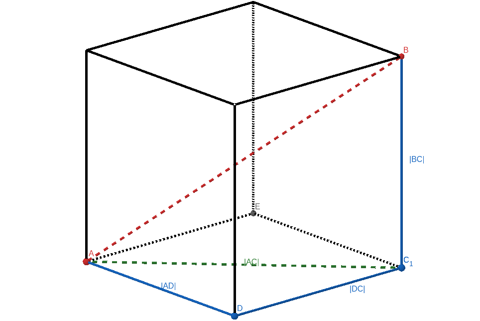
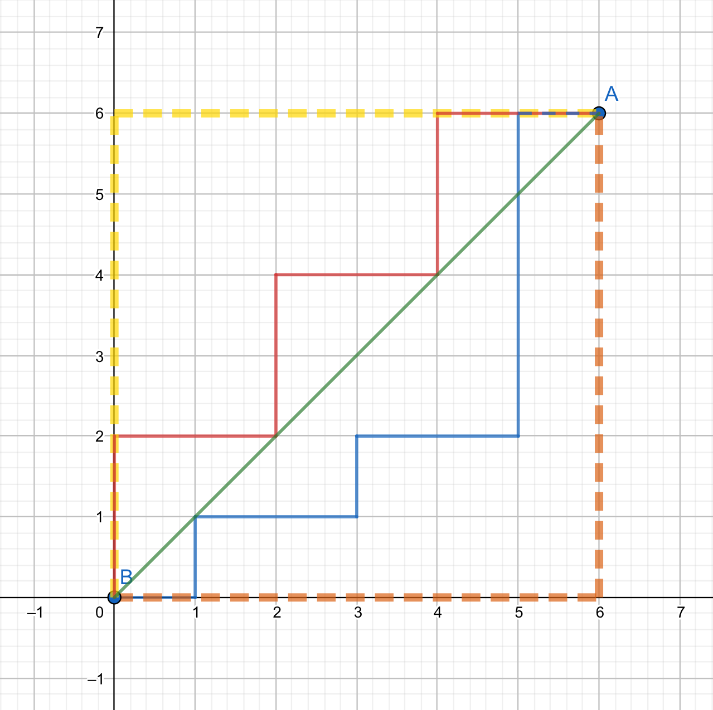
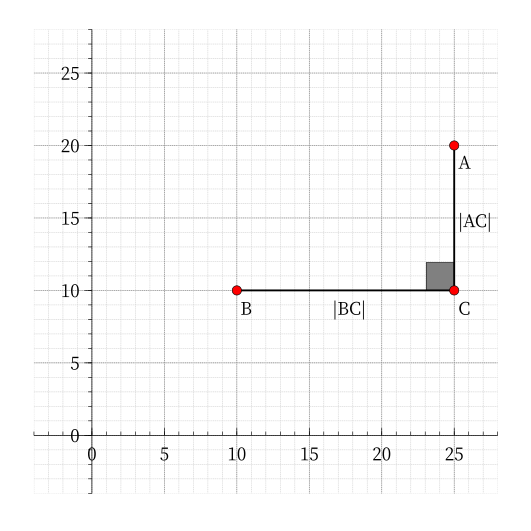
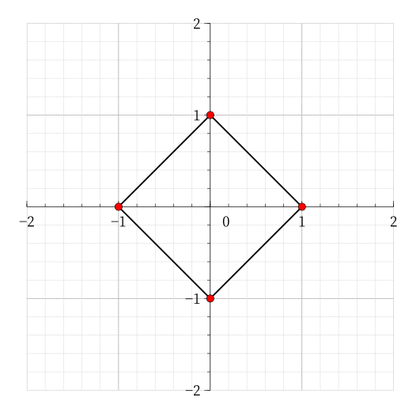
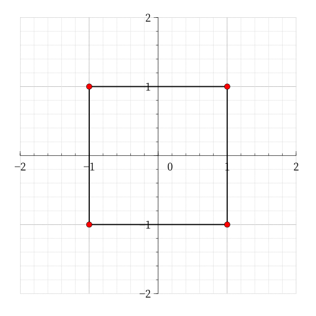

OI Wiki · prijevod · Računska geometrijaOI Wiki · translation · Computational geometry
UdaljenostDistance
Sadržaj
Euklidska udaljenost
Dvodimenzionalni prostor
Definicija
Euklidska udaljenost. U pravokutnom koordinatnom sustavu, ako su koordinate točaka \(A,B\) redom \(A(x_1,y_1),B(x_2,y_2)\), euklidska udaljenost između njih je:
Objašnjenje
Na primjer, ako su u pravokutnom koordinatnom sustavu zadane točke \(A(6,5),B(2,2)\), formulom lako dobivamo euklidsku udaljenost između \(A\) i \(B\):
Osim toga, euklidska udaljenost točke \(P(x,y)\) od ishodišta može se izraziti formulom:
n-dimenzionalni prostor
Uvod
A kako glasi formula za euklidsku udaljenost dviju točaka u trodimenzionalnom prostoru? Promotrimo sliku.

Lako uočavamo da je u \(\triangle ADC\) kut \(\angle ADC = 90^\circ\), a u \(\triangle ACB\) kut \(\angle ACB = 90^\circ\).
Definicija
Odatle slijedi formula za euklidsku udaljenost u trodimenzionalnom prostoru:
Objašnjenje
Zadatak NOIP2017 Sir koristi ovo znanje i može poslužiti kao primjer za euklidsku udaljenost.
Analogno dobivamo formulu za euklidsku udaljenost u \(n\)-dimenzionalnom prostoru: za \(\vec A(x_{11}, x_{12}, \cdots,x_{1n}) ,~ \vec B(x_{21}, x_{22}, \cdots,x_{2n})\) vrijedi
Iako je euklidska udaljenost vrlo korisna, ima i očit nedostatak. Pri računanju euklidske udaljenosti dviju cjelobrojnih točaka rezultat je često broj s pomičnim zarezom, pa postoji određena pogreška.
Manhattanska udaljenost
Definicija
U dvodimenzionalnom prostoru manhattanska udaljenost (Manhattan distance) između dviju točaka jednaka je zbroju apsolutne vrijednosti razlike apscisa i apsolutne vrijednosti razlike ordinata. Za točke \(A(x_1,y_1),B(x_2,y_2)\) manhattanska udaljenost između \(A\) i \(B\) izražava se formulom:
Objašnjenje
Promotrimo sliku:

Između \(A\) i \(B\) žuta i narančasta linija prikazuju manhattansku udaljenost, crvena i plava linija prikazuju ekvivalentne manhattanske udaljenosti, a zelena linija prikazuje euklidsku udaljenost.
Isti primjer: na slici ispod koordinate točaka \(A,B\) su \(A(25,20),B(10,10)\).

Formulom lako dobivamo manhattansku udaljenost između \(A\) i \(B\):
Izvođenjem dobivamo formulu za manhattansku udaljenost u \(n\)-dimenzionalnom prostoru:
Svojstva
Osim formule, manhattanska udaljenost ima i sljedeća matematička svojstva:
- Nenegativnost: manhattanska udaljenost je nenegativan broj, tj. \(d(i,j)\geq 0\).
- Identitet: manhattanska udaljenost točke od same sebe jednaka je \(0\), tj. \(d(i,i) = 0\).
- Simetričnost: manhattanska udaljenost od \(A\) do \(B\) jednaka je onoj od \(B\) do \(A\), tj. \(d(i,j) = d(j,i)\).
- Nejednakost trokuta: izravna udaljenost od točke \(i\) do \(j\) nije veća od udaljenosti preko bilo koje druge točke \(k\), tj. \(d(i,j)\leq d(i,k)+d(k,j)\).
Primjer zadatka
P5098 „USACO04OPEN” Cave Cows 3
Prema zadatku, za izraz \(|x_1-x_2|+|y_1-y_2|\) možemo pretpostaviti \(x_1 - x_2 \geq 0\) i prema predznaku \(y_1 - y_2\) razlikovati dva slučaja:
-
\((y_1 - y_2 \geq 0)\rightarrow |x_1-x_2|+|y_1-y_2|=x_1 + y_1 - (x_2 + y_2)\)
-
\((y_1 - y_2 < 0)\rightarrow |x_1-x_2|+|y_1-y_2|=x_1 - y_1 - (x_2 - y_2)\)
Dovoljno je izračunati maksimum i minimum od \(x+y\) i \(x-y\) da bismo dobili odgovor.
Referentni kôd
#include <algorithm>
#include <cstdio>
using namespace std;
int main() {
int n, x, y, minx = 0x7fffffff, maxx = 0, miny = 0x7fffffff, maxy = 0;
scanf("%d", &n);
for (int i = 1; i <= n; i++) {
scanf("%d%d", &x, &y);
minx = min(minx, x + y), maxx = max(maxx, x + y);
miny = min(miny, x - y), maxy = max(maxy, x - y);
}
printf("%d\n", max(maxx - minx, maxy - miny));
return 0;
}
minx = 0x7FFFFFFF
maxx = 0
miny = 0x7FFFFFFF
maxy = 0
n = int(input())
for i in range(1, n + 1):
x, y = map(lambda x: int(x), input().split())
minx = min(minx, x + y)
maxx = max(maxx, x + y)
miny = min(miny, x - y)
maxy = max(maxy, x - y)
print(max(maxx - minx, maxy - miny))
Postoji i drugi pristup: manhattansku udaljenost pretvoriti u Čebiševljevu, o čemu govori posljednji dio.
Čebiševljeva udaljenost
Definicija
Čebiševljeva udaljenost (Chebyshev distance) metrika je u vektorskom prostoru u kojoj je udaljenost dviju točaka definirana kao maksimum apsolutnih razlika njihovih koordinata.1
U dvodimenzionalnom prostoru Čebiševljeva udaljenost između dviju točaka jednaka je maksimumu apsolutne vrijednosti razlike apscisa i apsolutne vrijednosti razlike ordinata. Za točke \(A(x_1,y_1),B(x_2,y_2)\) Čebiševljeva udaljenost između \(A\) i \(B\) izražava se formulom:
Formula za Čebiševljevu udaljenost u \(n\)-dimenzionalnom prostoru glasi:
Objašnjenje
Opet isti primjer: na slici ispod koordinate točaka \(A,B\) su \(A(25,20),B(10,10)\).
Pretvorba između manhattanske i Čebiševljeve udaljenosti
Postupak
Najprije nacrtajmo u pravokutnom koordinatnom sustavu sve točke čija je manhattanska udaljenost od ishodišta jednaka \(1\).
Iz formule lako dobivamo jednadžbu \(|x| + |y| = 1\).
Raspisivanjem apsolutnih vrijednosti dobivamo \(4\) linearne funkcije:
Nacrtamo li te \(4\) funkcije u koordinatnom sustavu, dobivamo kvadrat sa stranicom \(\sqrt{2}\), kao na slici:

Sve točke na rubu kvadrata imaju manhattansku udaljenost \(1\) od ishodišta.
Analogno nacrtajmo sve točke čija je Čebiševljeva udaljenost od ishodišta jednaka \(1\).
Iz formule znamo \(\max(|x|,|y|)=1\).
Raspisivanjem također dobivamo \(4\) dužine:
Nacrtane u koordinatnom sustavu daju kvadrat sa stranicom \(2\), kao na slici:

Sve točke na rubu kvadrata imaju Čebiševljevu udaljenost \(1\) od ishodišta.
Usporedimo li ove dvije slike, iznenađujuće otkrivamo:
ta su \(2\) kvadrata slični likovi.
Dokaz
Postoji li, dakle, veza između manhattanske i Čebiševljeve udaljenosti?
Dokažimo to ukratko:
Neka su \(A(x_1,y_1),B(x_2,y_2)\).
Raspišemo li apsolutne vrijednosti u manhattanskoj udaljenosti, dobivamo četiri vrijednosti; najveća od njih zbroj je dvaju nenegativnih brojeva, tj. manhattanska udaljenost. Manhattanska udaljenost točaka \(A,B\) tada je:
Lako uočavamo da je to Čebiševljeva udaljenost između točaka \((x_1 + y_1,x_1 - y_1), (x_2 + y_2,x_2 - y_2)\).
Dakle, pretvorimo li svaku točku \((x,y)\) u \((x + y, x - y)\), Čebiševljeva udaljenost u novom koordinatnom sustavu jednaka je manhattanskoj udaljenosti u izvornom.
Analogno, Čebiševljeva udaljenost točaka \(A,B\) je:
A to je manhattanska udaljenost između točaka \((\dfrac{x_1 + y_1}{2},\dfrac{x_1 - y_1}{2}), (\dfrac{x_2 + y_2}{2},\dfrac{x_2 - y_2}{2})\).
Dakle, pretvorimo li svaku točku \((x,y)\) u \((\dfrac{x + y}{2},\dfrac{x - y}{2})\), manhattanska udaljenost u novom koordinatnom sustavu jednaka je Čebiševljevoj udaljenosti u izvornom.
Zaključak
- Manhattanski koordinatni sustav dobiva se rotacijom Čebiševljeva koordinatnog sustava za \(45^\circ\) i smanjenjem na polovinu.
- Pretvorimo li koordinate točke \((x,y)\) u \((x + y, x - y)\), manhattanska udaljenost u izvornom sustavu jednaka je Čebiševljevoj udaljenosti u novom.
- Pretvorimo li koordinate točke \((x,y)\) u \((\dfrac{x + y}{2},\dfrac{x - y}{2})\), Čebiševljeva udaljenost u izvornom sustavu jednaka je manhattanskoj udaljenosti u novom.
Kad naiđemo na zadatak s Čebiševljevom ili manhattanskom udaljenošću, često ih možemo međusobno pretvarati. Obje udaljenosti imaju svoje prednosti i nedostatke u različitim zadacima i treba ih fleksibilno koristiti.
Primjeri zadataka
P4648 „IOI2007” pairs Parovi životinja (manhattanska u Čebiševljevu)
P3964 „TJOI2013” Okupljanje vjeverica (Čebiševljeva u manhattansku)
Na kraju dajemo drugo rješenje zadatka P5098 „USACO04OPEN” Cave Cows 3:
Manhattansku udaljenost iz zadatka pretvorimo u Čebiševljevu, tj. koordinate svake točke \((x,y)\) zamijenimo s \((x + y, x - y)\).
Traženi odgovor postaje \(\max\limits_{i,j\in n}\begin{Bmatrix} \max\begin{Bmatrix} |x_i - x_j|,|y_i - y_j|\end{Bmatrix}\end{Bmatrix}\).
Da bi razlika apscisa i razlika ordinata bile najveće, dovoljno je unaprijed izračunati maksimum i minimum od \(x,y\).
Referentni kôd
#include <algorithm>
#include <cstdio>
using namespace std;
int main() {
int n, x, y, a, b, minx = 0x7fffffff, maxx = 0, miny = 0x7fffffff, maxy = 0;
scanf("%d", &n);
for (int i = 1; i <= n; i++) {
scanf("%d%d", &a, &b);
x = a + b, y = a - b;
minx = min(minx, x), maxx = max(maxx, x);
miny = min(miny, y), maxy = max(maxy, y);
}
printf("%d\n", max(maxx - minx, maxy - miny));
return 0;
}
minx = 0x7FFFFFFF
maxx = 0
miny = 0x7FFFFFFF
maxy = 0
n = int(input())
for i in range(1, n + 1):
a, b = map(lambda x: int(x), input().split())
x = a + b
y = a - b
minx = min(minx, x)
maxx = max(maxx, x)
miny = min(miny, y)
maxy = max(maxy, y)
print(max(maxx - minx, maxy - miny))
Usporedimo li ova dva kôda, opet otkrivamo da dva različita pristupa daju potpuno ekvivalentan kôd — zar nije zanimljivo? Naravno, dublje teme ostavljamo za samostalno istraživanje.
Minkowskijeva udaljenost
Minkowskijevu udaljenost dviju točaka \(X(x_1, x_2, \dots, x_n)\), \(Y(y_1, y_2, \dots, y_n)\) u \(n\)-dimenzionalnom prostoru definiramo kao:
Posebno:
- za \(p=1\), \(D(X, Y) = \sum_{i=1}^n \left\vert x_i - y_i \right\vert\) je manhattanska udaljenost;
- za \(p=2\), \(D(X, Y) = \left(\sum_{i=1}^n (x_i - y_i)^2\right)^{1/2}\) je euklidska udaljenost;
- za \(p \to \infty\), \(D(X, Y) = \lim_{p \to \infty}\left(\sum_{i=1}^n \left\vert x_i - y_i \right\vert ^p\right) ^{1/p} = \max\limits_{i=1}^n \left\vert x_i - y_i \right\vert\) je Čebiševljeva udaljenost.
Napomena: Minkowskijeva udaljenost je metrika samo za \(p \ge 1\); dokaz vidi u Minkowski distance - Wikipedia.
Literatura i poveznice
- Kratko o tri uobičajene udaljenosti, zahvaljujemo autoru xuxing na dopuštenju.
Contents
Euclidean distance
Two-dimensional space
Definition
The Euclidean distance. In the Cartesian coordinate system, if the coordinates of points \(A,B\) are \(A(x_1,y_1),B(x_2,y_2)\), the Euclidean distance between the two points is:
Explanation
For example, if in the Cartesian coordinate system there are two points \(A(6,5),B(2,2)\), we easily obtain the Euclidean distance between \(A\) and \(B\) from the formula:
In addition, the Euclidean distance from \(P(x,y)\) to the origin can be expressed by the formula:
n-dimensional space
Introduction
So what is the Euclidean distance formula for two points in three-dimensional space? Let us look at the figure below.
We easily see that in \(\triangle ADC\), \(\angle ADC = 90^\circ\); in \(\triangle ACB\), \(\angle ACB = 90^\circ\).
Definition
From this we obtain the Euclidean distance formula in three-dimensional space:
Explanation
NOIP2017 Senior Cheese uses this knowledge and can serve as an example problem for Euclidean distance.
By analogy, we obtain the Euclidean distance formula in \(n\)-dimensional space: for \(\vec A(x_{11}, x_{12}, \cdots,x_{1n}) ,~ \vec B(x_{21}, x_{22}, \cdots,x_{2n})\),
Although the Euclidean distance is very useful, it has an obvious drawback. When computing the Euclidean distance between two lattice points, the answer is often a floating-point number, so there is some error.
Manhattan distance
Definition
In two-dimensional space, the Manhattan distance between two points is the sum of the absolute difference of their x-coordinates and the absolute difference of their y-coordinates. For points \(A(x_1,y_1),B(x_2,y_2)\), the Manhattan distance between \(A\) and \(B\) is given by the formula:
Explanation
Look at the figure below:
Between \(A\) and \(B\), the yellow and orange lines both represent the Manhattan distance, the red and blue lines represent equivalent Manhattan distances, and the green line represents the Euclidean distance.
Same example: in the figure below the coordinates of \(A,B\) are \(A(25,20),B(10,10)\).
From the formula, we easily obtain the Manhattan distance between \(A\) and \(B\):
By derivation, we obtain the Manhattan distance formula in \(n\)-dimensional space:
Properties
Besides the formula, the Manhattan distance has the following mathematical properties:
- Non-negativity: the Manhattan distance is a non-negative number, i.e. \(d(i,j)\geq 0\).
- Identity: the Manhattan distance from a point to itself is \(0\), i.e. \(d(i,i) = 0\).
- Symmetry: the Manhattan distance from \(A\) to \(B\) equals that from \(B\) to \(A\), i.e. \(d(i,j) = d(j,i)\).
- Triangle inequality: the direct distance from point \(i\) to \(j\) is not greater than the distance via any other point \(k\), i.e. \(d(i,j)\leq d(i,k)+d(k,j)\).
Example problem
P5098 "USACO04OPEN" Cave Cows 3
According to the problem, for the expression \(|x_1-x_2|+|y_1-y_2|\) we may assume \(x_1 - x_2 \geq 0\) and split into two cases according to the sign of \(y_1 - y_2\):
-
\((y_1 - y_2 \geq 0)\rightarrow |x_1-x_2|+|y_1-y_2|=x_1 + y_1 - (x_2 + y_2)\)
-
\((y_1 - y_2 < 0)\rightarrow |x_1-x_2|+|y_1-y_2|=x_1 - y_1 - (x_2 - y_2)\)
It suffices to find the maximum and minimum of \(x+y\) and \(x-y\) to obtain the answer.
Reference code
#include <algorithm>
#include <cstdio>
using namespace std;
int main() {
int n, x, y, minx = 0x7fffffff, maxx = 0, miny = 0x7fffffff, maxy = 0;
scanf("%d", &n);
for (int i = 1; i <= n; i++) {
scanf("%d%d", &x, &y);
minx = min(minx, x + y), maxx = max(maxx, x + y);
miny = min(miny, x - y), maxy = max(maxy, x - y);
}
printf("%d\n", max(maxx - minx, maxy - miny));
return 0;
}
minx = 0x7FFFFFFF
maxx = 0
miny = 0x7FFFFFFF
maxy = 0
n = int(input())
for i in range(1, n + 1):
x, y = map(lambda x: int(x), input().split())
minx = min(minx, x + y)
maxx = max(maxx, x + y)
miny = min(miny, x - y)
maxy = max(maxy, x - y)
print(max(maxx - minx, maxy - miny))
There is actually a second approach: convert the Manhattan distance into the Chebyshev distance, which is discussed in the last part.
Chebyshev distance
Definition
The Chebyshev distance is a metric in vector space in which the distance between two points is defined as the maximum of the absolute differences of their coordinates.1
In two-dimensional space, the Chebyshev distance between two points is the maximum of the absolute difference of their x-coordinates and the absolute difference of their y-coordinates. For points \(A(x_1,y_1),B(x_2,y_2)\), the Chebyshev distance between \(A\) and \(B\) is given by the formula:
The Chebyshev distance formula in \(n\)-dimensional space can be expressed as:
Explanation
Still the same example: in the figure below the coordinates of \(A,B\) are \(A(25,20),B(10,10)\).
Converting between Manhattan and Chebyshev distance
Process
First, consider drawing all points in the Cartesian coordinate system whose Manhattan distance from the origin is \(1\).
From the formula, we easily obtain the equation \(|x| + |y| = 1\).
Expanding the absolute values, we obtain \(4\) linear functions:
Drawing these \(4\) functions in the Cartesian coordinate system gives a square with side length \(\sqrt{2}\), as shown below:
All points on the boundary of the square have Manhattan distance \(1\) from the origin.
Similarly, consider drawing all points in the Cartesian coordinate system whose Chebyshev distance from the origin is \(1\).
From the formula, we know \(\max(|x|,|y|)=1\).
Expanding the expression, we likewise obtain \(4\) segments:
Drawn in the Cartesian coordinate system, this gives a square with side length \(2\), as shown below:
All points on the boundary of the square have Chebyshev distance \(1\) from the origin.
Comparing these two figures, we make a surprising discovery:
these \(2\) squares are similar figures.
Proof
So, is there a connection between the Manhattan distance and the Chebyshev distance?
Let us give a brief proof:
Suppose \(A(x_1,y_1),B(x_2,y_2)\).
Expanding the absolute values in the Manhattan distance, we obtain four values; the largest of these four is the sum of two non-negative numbers, i.e. the Manhattan distance. Then the Manhattan distance between \(A,B\) is:
We easily see that this is the Chebyshev distance between the points \((x_1 + y_1,x_1 - y_1), (x_2 + y_2,x_2 - y_2)\).
So, transforming every point \((x,y)\) into \((x + y, x - y)\), the Chebyshev distance in the new coordinate system equals the Manhattan distance in the original one.
Similarly, the Chebyshev distance between \(A,B\) is:
And this is the Manhattan distance between the points \((\dfrac{x_1 + y_1}{2},\dfrac{x_1 - y_1}{2}), (\dfrac{x_2 + y_2}{2},\dfrac{x_2 - y_2}{2})\).
So, transforming every point \((x,y)\) into \((\dfrac{x + y}{2},\dfrac{x - y}{2})\), the Manhattan distance in the new coordinate system equals the Chebyshev distance in the original one.
Conclusion
- The Manhattan coordinate system is obtained by rotating the Chebyshev coordinate system by \(45^\circ\) and then shrinking it to half its size.
- After changing the coordinates of a point \((x,y)\) to \((x + y, x - y)\), the Manhattan distance in the original coordinate system equals the Chebyshev distance in the new one.
- After changing the coordinates of a point \((x,y)\) to \((\dfrac{x + y}{2},\dfrac{x - y}{2})\), the Chebyshev distance in the original coordinate system equals the Manhattan distance in the new one.
When encountering problems involving the Chebyshev or Manhattan distance, we can often convert between them. The two distances have different advantages and disadvantages in different problems and should be used flexibly.
Example problems
P4648 "IOI2007" pairs Animal Pairs (Manhattan to Chebyshev)
P3964 "TJOI2013" Squirrel Gathering (Chebyshev to Manhattan)
Finally, we give the second solution to P5098 "USACO04OPEN" Cave Cows 3:
We convert the Manhattan distance required by the problem into the Chebyshev distance, i.e. change the coordinates of every point \((x,y)\) to \((x + y, x - y)\).
The required answer becomes \(\max\limits_{i,j\in n}\begin{Bmatrix} \max\begin{Bmatrix} |x_i - x_j|,|y_i - y_j|\end{Bmatrix}\end{Bmatrix}\).
To maximize the difference of x-coordinates and the difference of y-coordinates, it suffices to precompute the maximum and minimum of \(x,y\).
Reference code
#include <algorithm>
#include <cstdio>
using namespace std;
int main() {
int n, x, y, a, b, minx = 0x7fffffff, maxx = 0, miny = 0x7fffffff, maxy = 0;
scanf("%d", &n);
for (int i = 1; i <= n; i++) {
scanf("%d%d", &a, &b);
x = a + b, y = a - b;
minx = min(minx, x), maxx = max(maxx, x);
miny = min(miny, y), maxy = max(maxy, y);
}
printf("%d\n", max(maxx - minx, maxy - miny));
return 0;
}
minx = 0x7FFFFFFF
maxx = 0
miny = 0x7FFFFFFF
maxy = 0
n = int(input())
for i in range(1, n + 1):
a, b = map(lambda x: int(x), input().split())
x = a + b
y = a - b
minx = min(minx, x)
maxx = max(maxx, x)
miny = min(miny, y)
maxy = max(maxy, y)
print(max(maxx - minx, maxy - miny))
Comparing the two pieces of code, we again find that two different approaches lead to completely equivalent code — isn't that remarkable? Of course, deeper topics are left for further study.
Minkowski distance
We define the Minkowski distance between two points \(X(x_1, x_2, \dots, x_n)\), \(Y(y_1, y_2, \dots, y_n)\) in \(n\)-dimensional space as:
In particular:
- when \(p=1\), \(D(X, Y) = \sum_{i=1}^n \left\vert x_i - y_i \right\vert\) is the Manhattan distance;
- when \(p=2\), \(D(X, Y) = \left(\sum_{i=1}^n (x_i - y_i)^2\right)^{1/2}\) is the Euclidean distance;
- when \(p \to \infty\), \(D(X, Y) = \lim_{p \to \infty}\left(\sum_{i=1}^n \left\vert x_i - y_i \right\vert ^p\right) ^{1/p} = \max\limits_{i=1}^n \left\vert x_i - y_i \right\vert\) is the Chebyshev distance.
Note: the Minkowski distance is a metric only when \(p \ge 1\); for the proof see Minkowski distance - Wikipedia.
References and links
- A brief discussion of three common distances, with thanks to the author xuxing for permission.